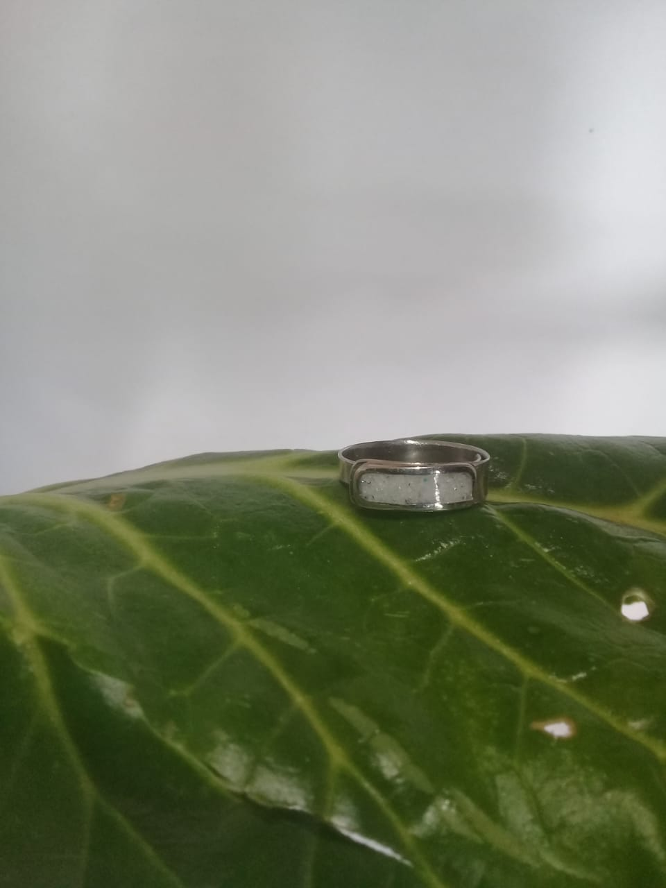
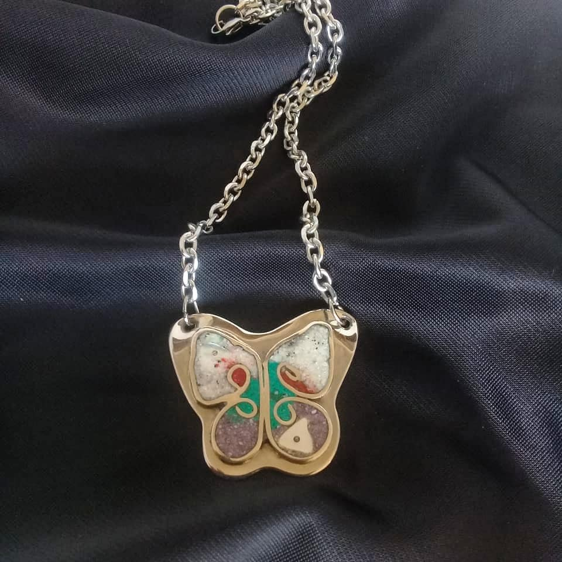
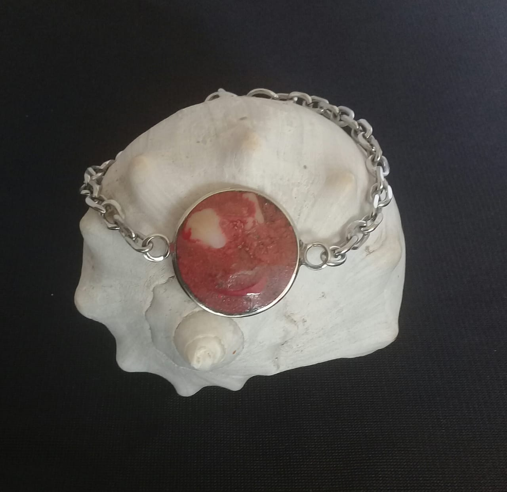

Acero quirúrgico
- Es un material que no se oxida, no se oscurece con el tiempo, su tonalidad y brillo no se alteran.
- Es antialérgico, la cantidad de níquel que tiene es residual por lo que en rarisimas ocasiones causa alergias.
- No necesita mantenimiento.
- Es un material duro, 1000 veces más duro que el platino y no se deforma
- Apariencia similar al platino y al oro blanco, capaz de combinarse con todo tipo de materiales tanto las piedras como la madera marfil o hueso
Para más información, hacer click aquí.